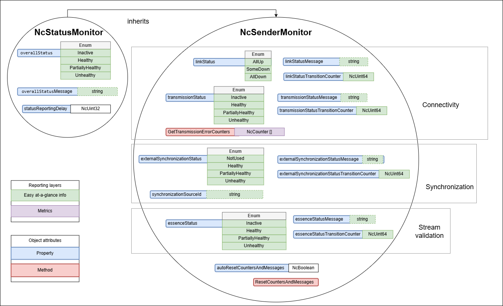
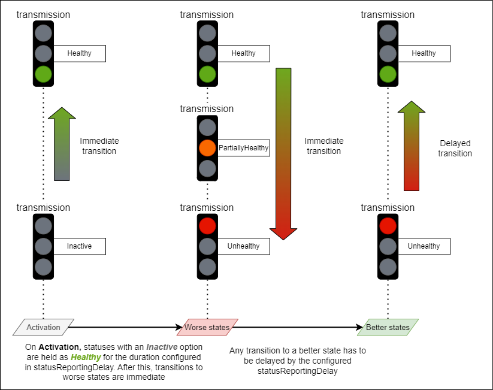
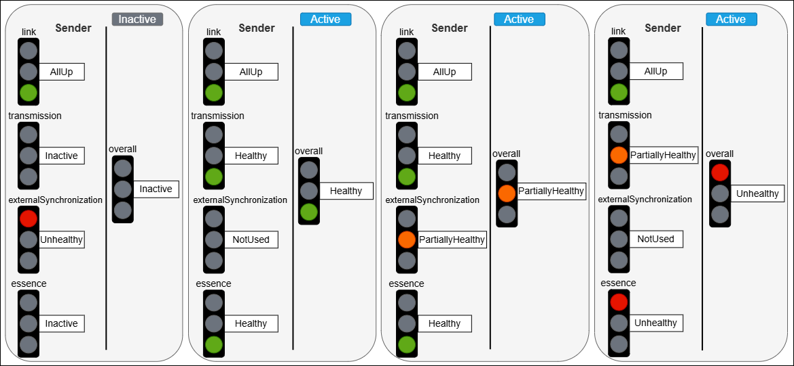
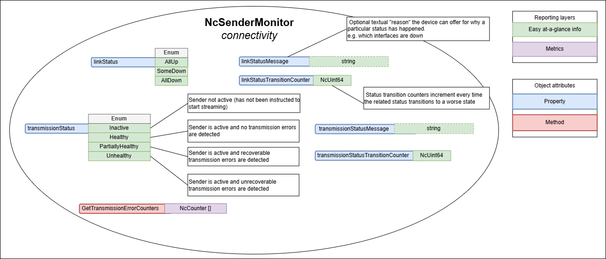
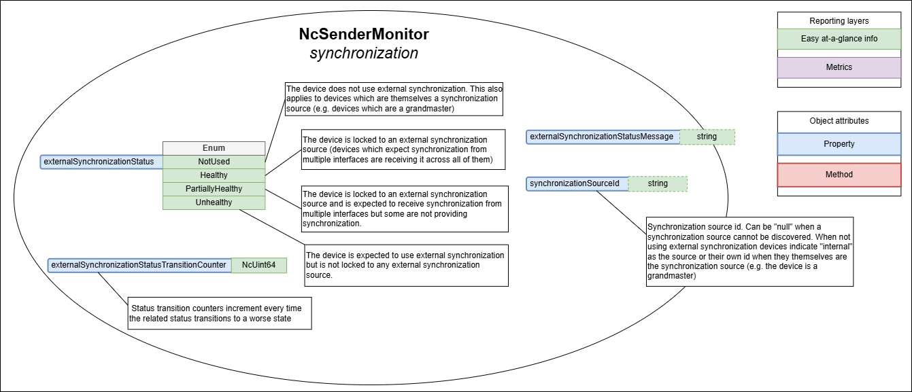
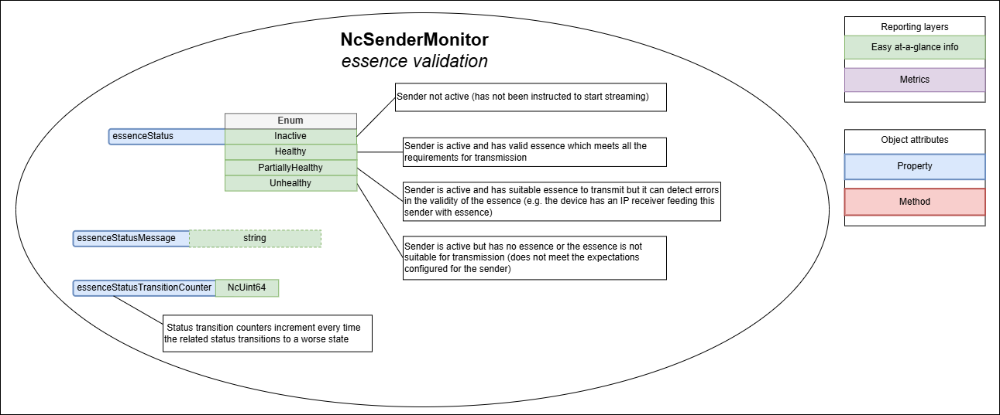
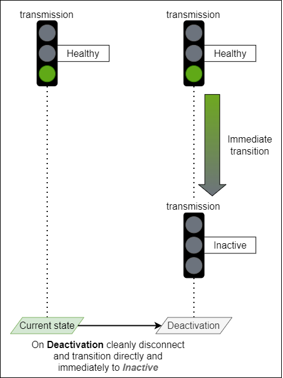

AMWA BCP-008-02: NMOS Sender Status
(c) AMWA 2021, CC Attribution-NoDerivatives 4.0 International (CC BY-ND 4.0)

Introduction
Alarms are context and workflow specific, and in general determined by a higher level monitoring system, with different calculations for different users. For example, a hardware error status (such as link down) from a device not actively being used would not cause an alarm to a live workflow operator, but the same status condition would escalate an alarm to a maintenance engineer who needs to prepare that device for future operational use.
This BCP document does not attempt to define alarms but instead it describes the expectations, behavior and conformance requirements for Devices with stream Senders in terms of status monitoring.
The overall status concepts defined in this document are intended to make it easy to calculate a typical operator alarm condition. In simple systems with no higher level monitoring system, the overallStatus can be used directly as a simple pre-defined non-configurable operator alarm condition, without in any way limiting a monitoring system's ability to take the same status values and calculate one or more different alarm conditions appropriate to other desired workflows or users.
This document relies on previous familiarity with the following existing documents:
- NMOS Control Framework
- NMOS Control Protocol
- NMOS Discovery and Registration
- NMOS Device Connection Management
The technical models referenced in this document are fully published in the Monitoring NMOS Control Feature Set.
The following domains are covered in terms of status monitoring with specific sections for each:
Use of Normative Language
The key words "MUST", "MUST NOT", "REQUIRED", "SHALL", "SHALL NOT", "SHOULD", "SHOULD NOT", "RECOMMENDED", "MAY", and "OPTIONAL" in this document are to be interpreted as described in RFC-2119.
Definitions
The NMOS terms 'Controller', 'Node', 'Source', 'Flow', 'Sender', 'Receiver' are used as defined in the NMOS Glossary.
Sender activation - An IS-05 activation which results in the Sender having the required transport parameters and a master_enable status of true. This can happen for an idle sender but also when the sender is already activated and a client is applying new transport parameters.
Prerequisites
Devices in conformance to this BCP MUST comply with NMOS Control Framework for generating device models.
Devices in conformance to this BCP MUST comply with NMOS Control Protocol to expose device models via a standard API with full support for notifications.
Devices in conformance to this BCP MUST comply with NMOS Discovery and Registration create, describe and register Nodes, Devices and Sender resources.
Devices in conformance to this BCP MUST comply with NMOS Device Connection Management to perform connection management actions against Sender resources.
Sender monitoring
The technical model describing the monitoring requirements for a sender is NcSenderMonitor.
This model inherits from the baseline status monitoring model NcStatusMonitor.
Sender monitors MUST implement NcSenderMonitor directly or derive a vendor specific variant from NcSenderMonitor which MAY add more statuses, properties and methods but MUST still comply with the requirements set out in this specification.
 |
|---|
| Sender monitoring model |
Sender status reporting delay
The statusReportingDelay property allows clients to customize the reporting delay used by devices to report statuses. Devices MUST use 3s as the default value when the sender monitor object is first constructed and MUST allow it to be changed to values within the device's published constraints. Devices MUST allow setting the statusReportingDelay property to a value of 3s. All domain specific statuses are impacted by the configured statusReportingDelay as follows:
-
A sender is expected to go through a period of instability upon activation. Therefore, on Sender activation domain specific statuses offering an
Inactiveoption MUST transition immediately to the Healthy state. Furthermore, after activation, as long as the Sender isn’t being deactivated, it MUST delay the reporting of non Healthy states for the duration specified bystatusReportingDelay, and then transition to any other appropriate state. -
Once any Sender activation
statusReportingDelayhas elapsed and the Sender isn't being deactivated, all domain specific statuses MUST delay the transition to a more healthy state by the configuredstatusReportingDelayvalue and MUST only make the transition if the healthier state is maintained for the duration. All domain specific statuses MUST make a transition to a less healthy state without delay.
 |
|---|
| Status reporting delay example |
Sender status transition counters
All sender specific domain statuses have an associated status transition counter property. These MUST increment each time the associated status transitions to a less healthy state. Transitions to/from neutral states like Inactive or NotUsed are ignored.
The intention is that these properties store historical negative trend transitions for each status.
The list of all status transition counter properties is:
- linkStatusTransitionCounter
- transmissionStatusTransitionCounter
- externalSynchronizationStatusTransitionCounter
- essenceStatusTransitionCounter
Devices MUST be able to reset ALL status transition counter properties in the following two ways:
- When a sender activation occurs if
autoResetCountersAndMessagesis set totrue - When a client invokes the
ResetCountersAndMessagesmethod
The autoResetCountersAndMessages property allows clients to configure if ALL counters automatically reset with each Sender activation (by default devices MUST have this enabled). If this is enabled, senders MUST reset ALL counters to 0 after each activation. Devices MUST allow setting the autoResetCountersAndMessages property to a value of true and MAY allow setting the property to false. This supports use cases where users do not want to reset automatically after each activation.
Sender overall status
The purpose of the overallStatus is to abstract and combine the specific domain statuses of a monitor into a single status which can be more easily observed and displayed by a simple client.
Note: The overallStatus might remain the same even when specific domain statuses change. However, the overallStatusMessage might change to indicate that a different combination of internal states is causing the current overallStatus value.
Where possible, Device implementations are RECOMMENDED to populate the overallStatusMessage with the root causes which led to the current PartiallyHealthy or Unhealthy overallStatus.
For example, a number of domain statuses become less healthy when a network interface is down. In this case the overallStatusMessage could report the following root cause
NIC 1 is down
Furthermore, where possible Device implementations are RECOMMENDED to retain the previous status message when returning to a Healthy state from a PartiallyHealthy or Unhealthy state by prepending the previous message with "Previously: ".
For example, upon recovery to a healthy state the overallStatusMessage could hold the following value
Previously: NIC 1 is down
Devices MUST follow the rules listed below when mapping specific domain statuses in the combined overallStatus:
- When the Sender is Inactive the overallStatus uses the Inactive option
- When the Sender is Active the overallStatus takes the least healthy state of all domain statuses (if one status is PartiallyHealthy (or equivalent) and another is Unhealthy (or equivalent) then the overallStatus would be Unhealthy)
- The overallStatus is Healthy only when all domain statuses are either Healthy or a neutral state (e.g. Not used, Inactive)
 |
|---|
| Overall status mapping examples |
Sender status messages
The overall status and all sender specific domain statuses have an associated status message property. The list of all status message properties is:
- overallStatusMessage
- linkStatusMessage
- transmissionStatusMessage
- externalSynchronizationStatusMessage
- essenceStatusMessage
Resetting status message properties is achieved by assigning a value of null to them.
Devices MUST be able to reset ALL status message properties in the following two ways:
- When a sender activation occurs if
autoResetCountersAndMessagesis set to true - When a client invokes the
ResetCountersAndMessagesmethod
The autoResetCountersAndMessages property allows clients to configure if ALL status message properties automatically reset with each Sender activation (by default devices MUST have this enabled). If this is enabled, senders MUST reset ALL status message properties after each activation. Devices MUST allow setting the autoResetCountersAndMessages property to a value of true and MAY allow setting the property to false. This supports use cases where users do not want to reset automatically after each activation.
Sender connectivity
NcSenderMonitor includes the following specific items covering the connectivity domain:
- Properties
- linkStatus
- linkStatusMessage
- linkStatusTransitionCounter
- transmissionStatus
- transmissionStatusMessage
- transmissionStatusTransitionCounter
- Methods
- GetTransmissionErrorCounters
 |
|---|
| Sender connectivity (explanatory notes are informative) |
Link status
The linkStatus property allows devices to expose the health of all the physical links associated with the sender.
Devices MUST report the linkStatus as follows:
- AllUp when all of the interfaces are Up (equivalent to a Healthy state)
- SomeDown when some of the interfaces are Down (equivalent to a PartiallyHealthy state)
- AllDown when all interfaces are Down (equivalent to an Unhealthy state)
The linkStatusMessage is a nullable property where devices MAY offer the reason and further details as to why the current status value was chosen.
Devices are RECOMMENDED to publish information about which interfaces are down in the linkStatusMessage.
Example:
NIC1, NIC2 are down
Furthermore, where possible Device implementations are RECOMMENDED to retain the previous status message when returning to a Healthy state from a PartiallyHealthy or Unhealthy state by prepending the previous message with "Previously: ".
For example, upon recovery to a healthy state the linkStatusMessage could hold the following value
Previously: NIC1, NIC2 are down
Transmission status
The transmissionStatus property allows devices to expose the health of the sender with regards to transmitting a stream successfully. Other connection problems like 802.1x authorization, DHCP and other causes are also reflected in the transmissionStatus.
Devices MUST report the transmissionStatus as follows:
- Inactive when the sender is Inactive (this is a neutral state)
- Healthy when the sender is Active and transmitting the stream successfully without any detected errors
- PartiallyHealthy when the sender is Active and transmitting the stream successfully whilst detecting recoverable errors
- Unhealthy when the sender is Active and transmitting the stream successfully whilst detecting unrecoverable errors
The transmissionStatusMessage is a nullable property where devices MAY offer the reason and further details as to why the current status value was chosen.
Furthermore, where possible Device implementations are RECOMMENDED to retain the previous status message when returning to a Healthy state from a PartiallyHealthy or Unhealthy state by prepending the previous message with "Previously: ".
For example, upon recovery to a healthy state the transmissionStatusMessage could hold the following value
Previously: Transmission errors detected
Transmission error counters
The sender monitoring model provides means of gathering metrics around transmission errors. These are not statuses but instead enable further analysis when link status or transmission status indicate problems (are PartiallyHealthy or Unhealthy).
Devices with capabilities to detect transmission errors MUST implement the GetTransmissionErrorCounters method. This method returns a non empty collection of counters which hold the name, description and numeric value of the counter (this allows more capable devices to report different categories of errors or errors across different interfaces).
Devices with capabilities to detect transmission errors MUST be able to reset ALL transmission error counters in the following two ways:
- When a sender activation occurs if
autoResetCountersAndMessagesis set totrue - When a client invokes the
ResetCountersAndMessagesmethod
Devices that do not have the capability to detect transmission errors MUST implement the GetTransmissionErrorCounters method but return an empty collection.
Sender synchronization
NcSenderMonitor includes the following specific items covering the synchronization domain:
- Properties
- externalSynchronizationStatus
- externalSynchronizationStatusMessage
- externalSynchronizationStatusTransitionCounter
- synchronizationSourceId
 |
|---|
| Sender synchronization (explanatory notes are informative) |
External synchronization status
The externalSynchronizationStatus property allows devices to expose the health of the sender with regards to its synchronization mechanisms.
Devices MUST report the externalSynchronizationStatus as follows:
- NotUsed when the sender is not intending to use external synchronization or when the device is itself the synchronization source (this is a neutral state)
- Healthy when the sender is locked to an external synchronization source (devices which expect synchronization from multiple interfaces are receiving it across all of them)
- PartiallyHealthy when the sender is locked to an external synchronization source and is expected to receive synchronization from multiple interfaces but some are not providing synchronization (Senders MUST also temporarily transition to this state when detecting a synchronization source change)
- Unhealthy when the sender is expected to use external synchronization but is not locked to any external synchronization source
The externalSynchronizationStatusMessage is a nullable property where devices MAY offer the reason and further details as to why the current status value was chosen.
Devices are RECOMMENDED to publish in the externalSynchronizationStatusMessage property information about the previous synchronization source and originating interface.
Example:
Source change from: SDI1
or
Source change from: 00:0c:ec:ff:fe:0a:2b:a1 on NIC1
Furthermore, where possible Device implementations are RECOMMENDED to retain the previous status message when returning to a Healthy state from a PartiallyHealthy or Unhealthy state by prepending the previous message with "Previously: ".
For example, upon recovery to a healthy state the externalSynchronizationStatusMessage could hold the following value
Previously: Source change from: SDI1
Synchronization source change
When devices intend to use external synchronization they MUST publish the synchronization source id currently being used in the synchronizationSourceId property and update the externalSynchronizationStatus property whenever it changes, setting the synchronizationSourceId to null if a synchronization source cannot be discovered. Devices which are not intending to use external synchronization MUST populate this property with internal or their own id if they themselves are the synchronization source (e.g. the device is a grandmaster).
Where possible devices are RECOMMENDED to also indicate the interface used in the synchronization source id like in the following examples.
00:0c:ec:ff:fe:0a:2b:a1 on NIC1
or
00:1d:ec:ff:fe:0a:2b:b4, Blue
or
SDI1
or
BlackBurst 1
or
WCLK BNC1
When devices observe a synchronization source id change the externalSynchronizationStatus property MUST temporarily transition to a PartiallyHealthy state. It can then return to a different state if the operating conditions match it more closely (returning to a healthier state MUST respect the requirements in the status reporting delay section). Devices capable of reporting the specific interface used in the synchronization source id MUST follow the previous transition requirement even when the only change observed is the interface now being used for synchronization.
Sender essence validation
NcSenderMonitor includes the following specific items covering the essence validation domain:
- Properties
- essenceStatus
- essenceStatusMessage
- essenceStatusTransitionCounter
 |
|---|
| Sender essence validation (explanatory notes are informative) |
Essence status
The essenceStatus property allows devices to expose the health of the sender with regards to the validity of the essence being transmitted.
Devices MUST report the essenceStatus as follows:
- Inactive when the sender is Inactive (this is a neutral state)
- Healthy when the sender is Active and has valid essence which meets all the requirements for transmission (devices without any ability to check essence health still use Healthy if they have essence to transmit)
- PartiallyHealthy when the sender is Active and has suitable essence to transmit but it can detect errors in the validity of the essence (e.g. the device has an IP receiver feeding this sender with essence and the sender can inherit health statuses from the associated receiver)
- Unhealthy when the sender is active and has no essence or the essence is not suitable for transmission (does not meet the expectations configured for the sender)
The essenceStatusMessage is a nullable property where devices MAY offer the reason and further details as to why the current status value was chosen.
Examples:
Silence detected on input SDI1
Black detected on input SDI1
No valid input signal on input SDI1
Furthermore, where possible Device implementations are RECOMMENDED to retain the previous status message when returning to a Healthy state from a PartiallyHealthy or Unhealthy state by prepending the previous message with "Previously: ".
For example, upon recovery to a healthy state the essenceStatusMessage could hold the following value
Previously: No valid input signal on input SDI1
Deactivating a sender
A Sender is deactivated after an IS-05 activation results in the Sender master_enable becoming false.
When a sender is being deactivated it MUST cleanly interrupt its transmission by not generating intermediate unhealthy states (PartiallyHealthy or Unhealthy) and instead transition directly and immediately (without being delayed by the statusReportingDelay) to Inactive for the following statuses:
- overallStatus
- transmissionStatus
- essenceStatus
 |
|---|
| Deactivation transition example |
Touchpoints and IS-04 senders
Sender monitors make use of the Touchpoints mechanism inherited from NcObject to attach to the correct sender identity.
The touchpoints property of any NcSenderMonitor MUST have one or more touchpoints of which one and only one entry MUST be of type NcTouchpointNmos where the resourceType field MUST be set to "sender" and the id field MUST be set to the associated IS-04 sender UUID.
Sender monitors MUST maintain a 1 to 1 relationship between its role and the sender resource it monitors (expressed via the touchpoints property) for the lifetime of the IS-04 sender resource.
Touchpoints example:
[
{
"contextNamespace": "x-nmos",
"resource": {
"resourceType": "sender",
"id": "9bfe1101-5513-45fa-ae3b-7e668e317bd5"
}
}
]
NcWorker inheritance
NcStatusMonitor inherits from the NcWorker model.
Since NcSenderMonitor inherits from the NcStatusMonitor model then it also indirectly inherits from the NcWorker model.
In the case of Sender monitors, the enabled property has no operational meaning and MUST NOT be interpreted in any way.
Devices MAY choose to not allow changes to the enabled property and instead return InvalidRequest to Set method invocations for this property.
Controller
Controllers MUST be capable to discover sender monitor objects (objects which implement NcSenderMonitor directly or derive a vendor specific variant from NcSenderMonitor) inside a device model and indicate them to the User. All blocks inside an MS-05-02 device allow searching for members by their class id.
Controllers MUST be capable to find the associated IS-04 sender identity for each sender monitor by using the touchpoints and indicate this relationship to the User.
Controllers MUST be capable to get the current state of the overallStatus property using the Get method and indicate this to the User.
Controllers MUST be capable of tracking changes to the overallStatus property by using subscriptions and notifications and reflect these changes to the User.
Controllers MUST be capable to get the current state of the following status properties using the Get method and indicate them to the User:
- linkStatus
- transmissionStatus
- externalSynchronizationStatus
- essenceStatus
Controllers MUST be capable of tracking changes to the following status properties by using subscriptions and notifications and reflect these changes to the User:
- linkStatus
- transmissionStatus
- externalSynchronizationStatus
- essenceStatus
Controllers MUST be capable of getting the current value of ALL status message properties using the Get method and indicate it to the User.
Controllers MUST be capable of tracking changes to ALL the status message properties by using subscriptions and notifications and reflect these to the User.
Controllers MUST be capable of getting the current value of the synchronizationSourceId using the Get method and indicate it to the User.
Controllers MUST be capable of tracking changes to the synchronizationSourceId property by using subscriptions and notifications and reflect these to the User.
The values of status message properties MUST NOT be interpreted by controllers and are meant to be used verbatim and indicated to the User.
Controllers SHOULD NOT open an excessive number of WebSocket connections against the same control endpoint.
Controllers MUST always use subscriptions and notifications to keep track of changes to any properties of interest and not revert to a polling behaviour.
Controllers MAY be capable of getting the transmission error counters from a device which offers them by invoking the GetTransmissionErrorCounters method using IS-12 commands and indicating their value to the User.
Controllers SHOULD NOT resort to a fast pace repetitive polling workflow for getting the transmission error counters of a device which offers them.
Controllers MAY be capable to invoke the ResetCountersAndMessages method by using IS-12 commands.
Controllers MAY be capable to set the autoResetCountersAndMessages property using the Set method.
Controllers MAY be capable of getting the current value of ANY status transition counter property using the Get method and indicate it to the User.
Controllers MAY be capable of tracking changes to ANY status transition counter property by using subscriptions and notifications and reflect these to the User.
Controllers MAY provide a single indicator to inform the User whenever ANY of the domains have a non zero status transition counter. This single indicator complements the overallStatus by capturing situations where ANY of the domains have experienced issues since their last reset.